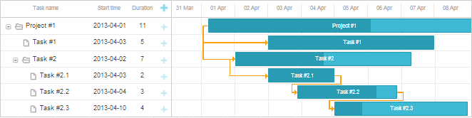
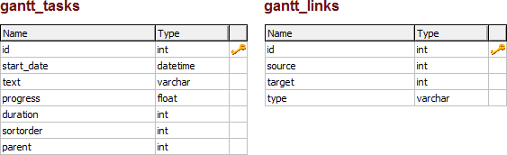

This tutorial will teach you how to create a basic Gantt chart on a page that will be able to save and update tasks in the database (i.e. on the server).
The current tutorial is intended for creating Gantt with dhtmlxConnector. If you want to use some server-side technology instead, check the list of tutorials describing available integration variants below:

Related sample: Basic initialization
Let's start the tutorial with getting the library package on your computer.
Then, we need to include dhtmlxGantt code files in your HTML file (to be able to use the functionality of the library). The dhtmlxGantt code files are:
myGantt.html
<!DOCTYPE html>
<html>
<head>
<title>How to Start with dhtmlxGantt</title>
<script src="codebase/dhtmlxgantt.js"></script> <link href="codebase/dhtmlxgantt.css" rel="stylesheet"> </head>
<body>
//your code will be here
</body>
</html>
Then, we need to create a DIV container and initialize dhtmlxGantt in it.
Beware, dhtmlxGantt is a static object and can be instantiated on the page once.
To refer to the dhtmlxGantt's instance you can use dhtmlxGantt or simply gantt.
gantt.init("gantt_here") command. As a parameter, the method takes an HTML container where a Gantt chart will be placed in.
myGantt.html
<!DOCTYPE html>
<html>
<head>
<title>How to Start with dhtmlxGantt</title>
<script src="codebase/dhtmlxgantt.js"></script>
<link href="codebase/dhtmlxgantt.css" rel="stylesheet">
</head>
<body>
<div id="gantt_here" style='width:1000px; height:400px;'></div>
<script type="text/javascript"> gantt.init("gantt_here"); </script>
</body>
</html>
Note, if you use the full-screen mode, specify the current style to guarantee the correct work:
<style type="text/css" media="screen"> html, body{
margin:0px;
padding:0px;
height:100%;
overflow:hidden;
}
</style>
Then, we need to populate the Gantt chart with the data from a sample data source. We will use the easiest of the ways and specify the data source as an inline object.
To load data, we will use
the parse method that takes the name of the data source as a parameter.
The properties of the object are:
myGantt.html
var tasks = {
data:[
{id:1, text:"Project #1",start_date:"01-04-2013", duration:11,
progress: 0.6, open: true},
{id:2, text:"Task #1", start_date:"03-04-2013", duration:5,
progress: 1, open: true, parent:1},
{id:3, text:"Task #2", start_date:"02-04-2013", duration:7,
progress: 0.5, open: true, parent:1},
{id:4, text:"Task #2.1", start_date:"03-04-2013", duration:2,
progress: 1, open: true, parent:3},
{id:5, text:"Task #2.2", start_date:"04-04-2013", duration:3,
progress: 0.8, open: true, parent:3},
{id:6, text:"Task #2.3", start_date:"05-04-2013", duration:4,
progress: 0.2, open: true, parent:3}
],
links:[
{id:1, source:1, target:2, type:"1"},
{id:2, source:1, target:3, type:"1"},
{id:3, source:3, target:4, type:"1"},
{id:4, source:4, target:5, type:"0"},
{id:5, source:5, target:6, type:"0"}
]
};
gantt.parse(tasks) command after the gantt.init("gantt_here") line:myGantt.html
gantt.init("gantt_here");
gantt.parse (tasks);
Related sample: Basic initialization
Read this and further steps if you want to load data from a database instead of from an inline object.
Then, we need to create a database with 2 tables to store tasks and dependencies.

sortorder is a property used only while loading data from a database. The property sets the index of a task among siblings.
CREATE TABLE `gantt_links` (
`id` int(11) NOT NULL AUTO_INCREMENT,
`source` int(11) NOT NULL,
`target` int(11) NOT NULL,
`type` varchar(1) NOT NULL,
PRIMARY KEY (`id`)
);
CREATE TABLE `gantt_tasks` (
`id` int(11) NOT NULL AUTO_INCREMENT,
`text` varchar(255) NOT NULL,
`start_date` datetime NOT NULL,
`duration` int(11) NOT NULL DEFAULT 0,
`progress` float NOT NULL DEFAULT 0,
`sortorder` int(11) NOT NULL DEFAULT 0,
`parent` int(11) NOT NULL,
PRIMARY KEY (`id`)
);
In the next 2 steps we will use the PHP platform to implement the server-client integration.
If you use another platform, please, read the article Data Loading to know how to
implement the server script yourself.
Then, we need to provide the ability to display data from the database in the chart. We'll do it with the load method, that takes the URL to the data source as a parameter.
In case of a database, it's a PHP file which realizes connection to the server side.
We will use the PHP platform and the dhtmlxConnector library,
as this is the easiest way to implement the server-side logic for dhtmlxGantt.
data.php
<?php
include ('codebase/connector/gantt_connector.php');
$res = new PDO("mysql:host=localhost;dbname=gantt", "root", "");
$gantt = new JSONGanttConnector($res);
$gantt->render_links("gantt_links","id","source,target,type");
$gantt->render_table(
"gantt_tasks",
"id",
"start_date,duration,text,progress,sortorder,parent"
);
?>
gantt.config.date_format property to "%Y-%m-%d %H:%i", to make the format of output data compatible with the format of dhtmlxGantt.
myGantt.html
gantt.config.date_format = "%Y-%m-%d %H:%i"; gantt.init("gantt_here");
gantt.load('data.php') command to load data from the database to the Gantt chart.
myGantt.html
gantt.config.date_format = "%Y-%m-%d %H:%i";
gantt.init("gantt_here");
gantt.load('data.php');//loads data to Gantt from the database
Please note that the order of columns in $connector->render_table is important. The first three columns in the columns list are mapped to start_date/duration/text or start_date/end_date/text properties of the client-side task object respectively, no matter what column names you specify. The logic of mapping columns is described below.
The second column is mapped to task.duration, if you specify 'duration' in the configuration:
$gantt->render_table("gantt_tasks","id","Start,duration,Name,progress,parent","");
or, using alias:
$gantt->render_table("gantt_tasks","id","Start,Length(duration),Name,progress,parent","");
// JS: task.start_date, task.duration, task.text, task.progress, task.parent
If any other column name is set, the second column will be mapped to the end_date property:
$gantt->render_table("gantt_tasks","id","Start,End,Name,progress,parent","");
// JS: task.start_date, task.end_date, task.text, task.progress, task.parent
All other columns will be mapped by their names without changes:
$gantt->render_table("gantt_tasks","id","start_date,duration,text,custom,parent","");
// JS: task.start_date, task.duration, task.text, task.custom, task.parent
Aliases can be used for other columns as well:
$gantt->render_table("gantt_tasks","id",
"start_date,duration,text,custom_column(customProperty),parent","");
// JS: task.start_date, task.duration, task.text, task.customProperty, task.parent
Then, we need to provide the ability to save the changes made in the Gantt chart to the database. For this purpose, we'll use the dataProcessor helper library. All we need to do is to initialize DataProcessor and attach it to the dhtmlxGantt object.
dataProcessor("data.php") command. dp.init(gantt) command.
myGantt.html
gantt.init("gantt_here");
gantt.load('data.php');
var dp=new gantt.dataProcessor("data.php"); dp.init(gantt);
That's all. A basic but functional Gantt chart that can load data from the database and save it back is ready. Now you may configure and customize it to meet all your needs.
We recommend you to read these articles as your next step:
Back to top